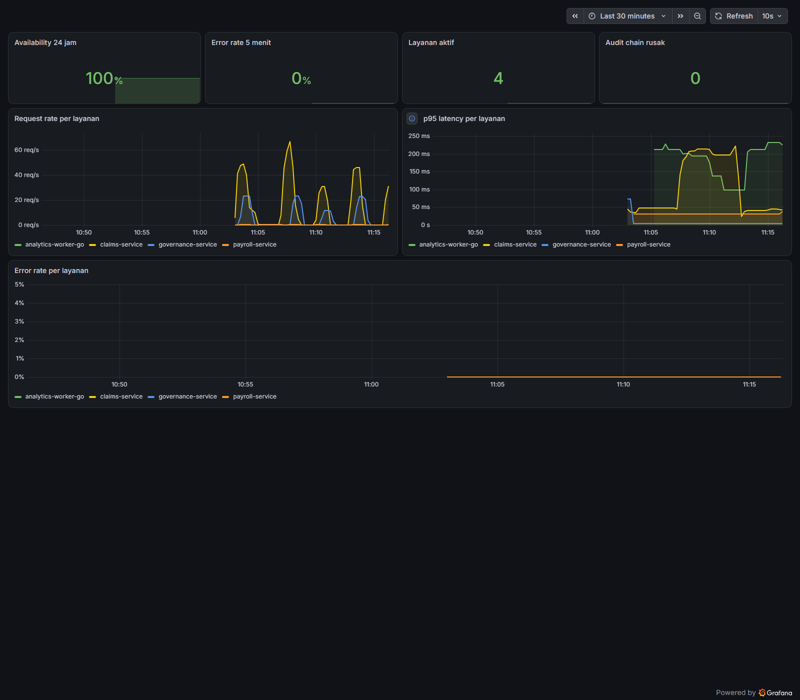
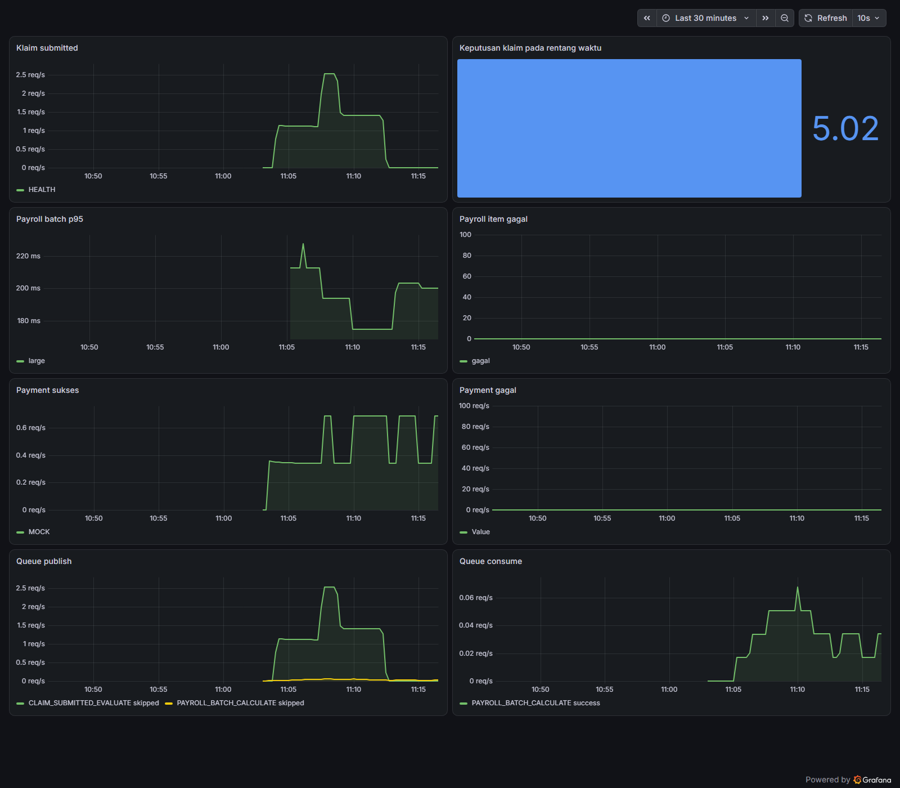
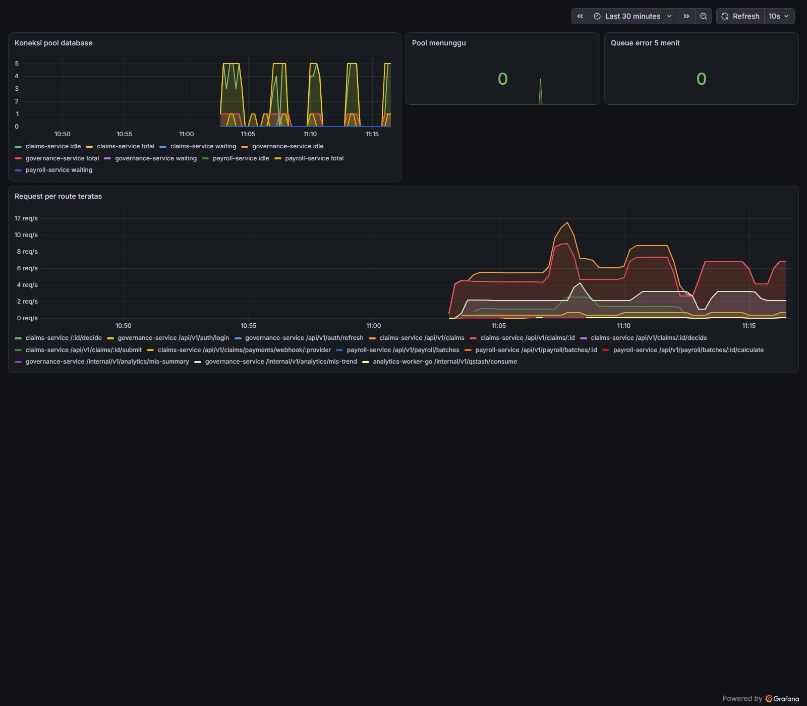
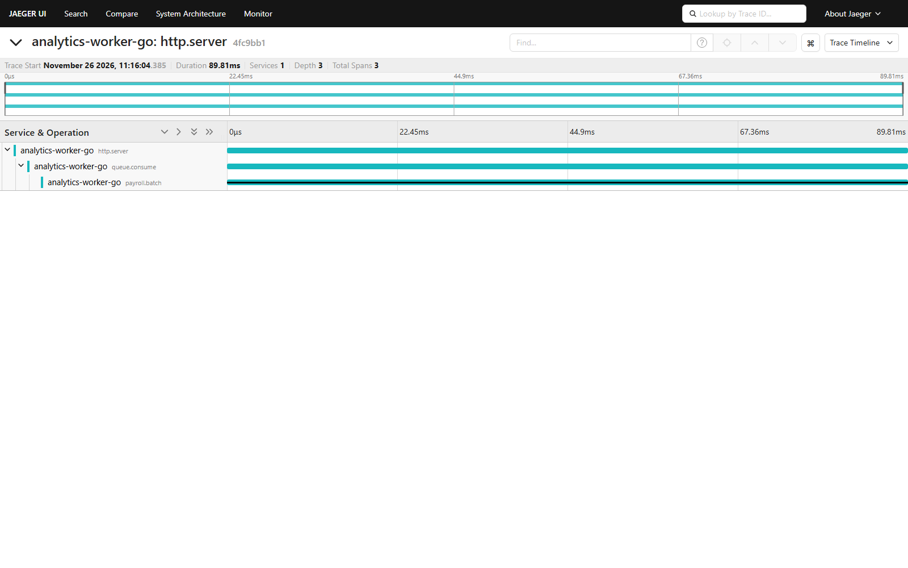

Aletheia M5.2 — Bukti Observability, SLO, dan Load Test
Dashboard dan trace




http.server ke queue.consume ke payroll.batch, 89,81 ms, 3 span.
Ringkasan load test
| Skenario | Beban | p95 | Error | Status |
|---|---|---|---|---|
| smoke | 5 VU, 1 menit | 27,92 ms | 0,00% | Lulus |
| claims-read | 50 VU, 5 menit | 230,58 ms | 0,00% | Lulus |
| claim-submit | 20 VU, 5 menit | 658 ms workflow | 0,00% | Lulus |
| approval-race | 20 klaim x 5 approval | 59,65 ms | 0 race salah | Lulus |
| payroll-batch | 5 batch x 505 item | 268,2 ms | 0 item gagal | Lulus |
| mis-dashboard | 30 VU, 5 menit | 110,04 ms | 0,00% | Lulus |
| payment-retry | 100 webhook duplikat | 732 ms total | 1 payment | Lulus |
Dokumen bukti
- m5.2-verification.md — verifikasi lengkap TASK-16.
- load/2026-11-26-summary.md — ringkasan 7 skenario.
- query-plans/README.md — before/after EXPLAIN.
- demo-access.md — akun, role, URL, dan perintah menjalankan ulang.
docs/evidence/load/— satu file per skenario.docs/evidence/query-plans/— plan sebelum dan sesudah index.
Dev server tetap menyala: web
localhost:5173, Grafana localhost:3000,
Jaeger localhost:16686, Prometheus localhost:9090.
Akun demo memakai kata sandi AletheiaDemo!2026.